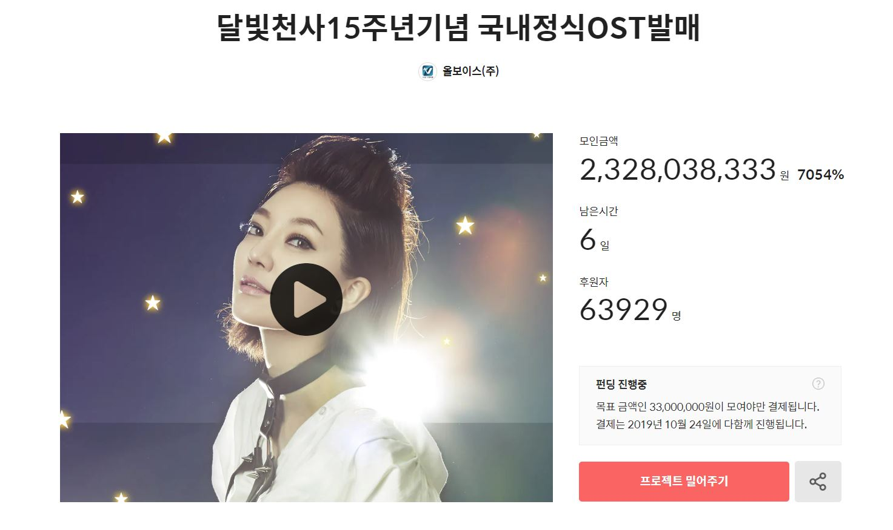
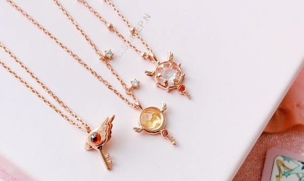

TOPIC1990~2000년대 핫 했던 '그' 만화들! | | |
<1990년 부터 2000년 까지, 우리의 어린 시절 함께 했던 추억의 만화들을 함께 알아가봐요.>
저희는 어린 시절 많은 만화영화들을 보며 자랐어요. 그러나 그 중 기억의 저 편으로 넘어간 만화들의 수가 많지 않나요?
그리운데 그게 어떤 만화였는지 기억도 가물가물하구요.
그래서 우리 "Back-To-2000-"은 저희들의 추억의 만화들을 소개하여 많은 사람들로 하여금
어린 시절을 추억하고 향수에 빠지게 하는 것이 목표입니다. |
interestingHot NEWS | |
|  | 달빛천사 OST 펀딩 23억 돌파
애니메이션 '달빛천사'의 국내정식 OST가 국내 크라우드 펀딩 역사상
최대 기록을 달성할 것으로 전망된다.
이용신 성우가 지난 9월 27일 텀블벅에서 시작된 '달빛천사 15주년 기념
국내정식 OST 발매프로젝트'의 후원금액이 10월 10일 20억원을 넘어섰다. |
카드캡터 체리 후속작 방영
사쿠라 카드 편 완결 후 16년 만에 '카드캡터 체리'의
신 시리즈 "카드캡터 체리; 클리어카드 편" 연재가
결정 되었다.
2018년 9월 3일까지 5권이 발행 되면서 장기 연재 되고 있다. | |
|  | ‘카드캡터 체리' X 'OST’ 컬래버레이션
주얼리 브랜드 OST(이하 오에스티)와 카드캡터 체리의 컬래버레이션
상품이 출시해 큰 인기를 끌었다.
지난 4월 1차 한정판을 온라인에 선판매해 삽시간에 매진을 기록했으며,
8일 정식 출시해 주말 동안 메인 품목 초도 물량이 온∙오프라인
전 매장에서 완판됐다. |